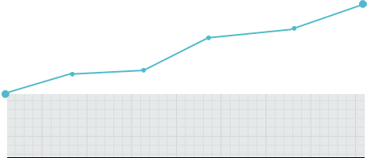

О БОЛЕЗНИ
Саркома – злокачественная опухоль, характеризующаяся сравнительно быстрым течением в случае отсутствия необходимого лечения. Может развиваться в мягких тканях и костях человека. Саркома - группа редких заболеваний, составляющих приблизительно 1% всех онкологических заболеваний у взрослых.
В связи с низкой распространенностью и высокой социальной значимостью заболевания, СМТ (код МКБ С 47 – 49.9) внесены в Перечень редких (орфанных) заболеваний, сформированный в соответствии с федеральным законом 323-ФЗ «Об основах охраны здоровья граждан Российской Федерации».
СТАТИСТИКА
В России, по данным официальной статистики МНИОИ им. Герцена, ежегодная заболеваемость саркомами мягких тканей и костей составляет около 5500 человек. Смертность составляет 4800 человек в год.
Показатель смертности можно значительно сократить за счет применения новейших методов хирургического и лекарственного лечения.
3413
ПАЦИЕНТОВ
3001
ПАЦИЕНТОВ
РОСТ 13,73%
ЗАБОЛЕВАЕМОСТИ

ЗАБОЛЕВАЕМОСТИ
2000г.
2010г.
Пациентам с саркомой, которые выявляются на начальных I-II стадиях заболевания, должны предлагаться современные возможности комбинированного лечения (хирургическое и лекарственное), что позволит реально улучшить качество жизни и результатов лечения данной категории больных.
Данное заболевание характеризуется также текущей несовершенной диагностикой, что приводит к позднему выявлению заболевания. Так, около 50% пациентов с саркомой выявляются только на III-IV стадиях заболевания. Этой категории больных требуется проведение системной химиотерапии практически немедленно.
Саркомы мягких тканей (СМТ) образуются в неэпителиальных тканях, включая мышечную, жировую и фиброзную. Согласно данным официальной статистики, количество вновь выявленных в 2010 году пациентов со злокачественными новообразованиями мягких тканей составило 3413 человек. По сравнению с 2000 годом заболеваемость СМТ выросла на 13,73% (13-е ранговое место в динамике заболеваемости среди всех ЗНО).
Смертность от СМТ в 2010 составила 3146 человек. Прирост смертности от СМТ с 2000 года составил 12,15% (для сравнения, прирост показателя смертности от всех онкологических заболеваний за указанный период составил 0,38%).
Около 40% пациентов с СМТ выявляются на поздних стадиях заболевания, что характеризуются наличием распространенных метастазов (преимущественно в легкие) и, соответственно, быстрой прогрессией и неблагоприятным прогнозом - большинство больных с IV стадией СМТ умирают в течение 6-12 месяцев.
СМТ затрагивает социально-активную и группу населения трудоспособного возраста и характеризуется меньшим возрастом пациентов по сравнению с другими онкологическими заболеваниями. В возрастной группе до 30 лет СМТ занимают 6-е место в структуре заболеваемости злокачественными новообразованиями и 3-е место в структуре смертности.